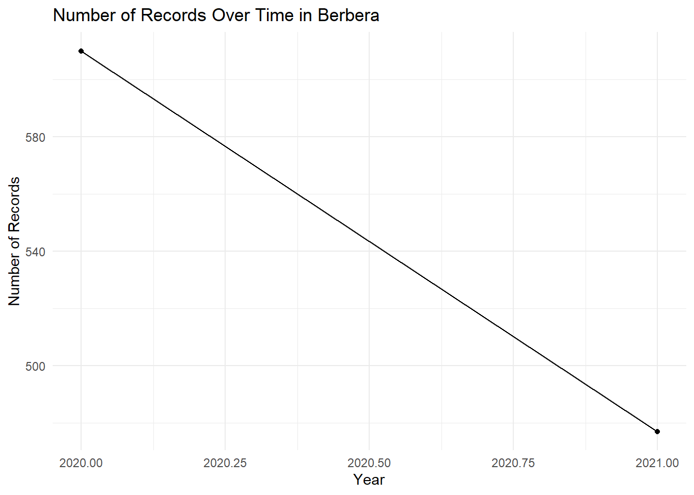

Code
# Load required libraries
library(tidyverse)
library(lubridate)
library(readxl)
library(gt)This exercise uses the Somali landing site dataset (lw) to practice data exploration, identify data gaps and quality issues, and propose improvements. This is a crucial first step in any stock assessment.
First, we need to load the necessary libraries and the dataset.
# Load required libraries
library(tidyverse)
library(lubridate)
library(readxl)
library(gt)The following code loads the length-weight dataset from the Excel file and performs some initial cleaning.
# Load the dataset
lw_raw <- read_excel(
'../data_shared/ProjKalluun_master_data_entry.xlsx',
sheet = 'Section 3',
skip = 4
)
# Clean and prepare the data
lw <- lw_raw |>
janitor::clean_names() |>
filter(!is.na(landing_site)) |>
mutate(
year = year(date_dd_mm_yy),
month = month(date_dd_mm_yy, label = TRUE),
day = day(date_dd_mm_yy),
.after = date_dd_mm_yy
) |>
mutate(
weight_kg = as.numeric(weight_kg),
length_cm = as.numeric(length_cm)
)Now that the data is loaded into the lw object, let’s start exploring it.
Here are a few commands to get you started.
# Get a glimpse of the data structure and column types
glimpse(lw)Rows: 3,571
Columns: 19
$ boat_id <dbl> 1, 1, 1, 1, 1, 1, 2, 2, 2, 2, 2, 2, 2, 2, 3, 3, 3…
$ catch_id <dbl> 1, 1, 1, 1, 1, 3, 7, 7, 7, 4, 4, 5, 5, 5, 9, 9, 9…
$ fish_id <dbl> 1, 2, 3, 4, 5, 6, 7, 8, 9, 10, 11, 12, 13, 14, 15…
$ date_dd_mm_yy <dttm> 2018-11-02, 2018-11-02, 2018-11-02, 2018-11-02, …
$ year <dbl> 2018, 2018, 2018, 2018, 2018, 2018, 2018, 2018, 2…
$ month <ord> Nov, Nov, Nov, Nov, Nov, Nov, Nov, Nov, Nov, Nov,…
$ day <int> 2, 2, 2, 2, 2, 2, 2, 2, 2, 2, 2, 2, 2, 2, 2, 2, 2…
$ region <chr> "Mogadishu", "Mogadishu", "Mogadishu", "Mogadishu…
$ landing_site <chr> "Lido Beach", "Lido Beach", "Lido Beach", "Lido B…
$ vessel_id <dbl> 1, 1, 1, 1, 1, 1, 2, 2, 2, 2, 2, 2, 2, 2, 3, 3, 3…
$ fish_type_code <chr> "YFT", "YFT", "YFT", "YFT", "YFT", "MAH", "OTH1",…
$ fish_index <dbl> 1, 2, 3, 4, 5, 1, 1, 2, 3, 1, 2, 1, 2, 3, 1, 2, 3…
$ weight_kg <dbl> 7.7, 3.6, 4.5, 4.5, 3.2, 9.5, 2.3, 3.2, 2.3, 11.0…
$ length_cm <dbl> 76, 59, 65, 67, 61, 124, 55, 64, 55, 84, 85, 62, …
$ fish_group <chr> "Tuna", "Tuna", "Tuna", "Tuna", "Tuna", "Other", …
$ notes <chr> NA, NA, NA, NA, NA, NA, "Aarjoog", "Aarjoog", "Aa…
$ kobo_section_1_index <lgl> NA, NA, NA, NA, NA, NA, NA, NA, NA, NA, NA, NA, N…
$ kobo_section_2_index <lgl> NA, NA, NA, NA, NA, NA, NA, NA, NA, NA, NA, NA, N…
$ kobo_section_3_index <lgl> NA, NA, NA, NA, NA, NA, NA, NA, NA, NA, NA, NA, N…# Get a summary of the main numeric and categorical variables
summary(lw) boat_id catch_id fish_id
Min. : 1.0 Min. : 1.0 Min. : 1.0
1st Qu.: 79.0 1st Qu.: 300.0 1st Qu.: 893.5
Median :154.0 Median : 599.0 Median :1786.0
Mean :157.2 Mean : 591.4 Mean :1786.0
3rd Qu.:232.0 3rd Qu.: 873.0 3rd Qu.:2678.5
Max. :318.0 Max. :1138.0 Max. :3571.0
date_dd_mm_yy year month day
Min. :2018-11-02 00:00:00 Min. :2018 Mar : 403 Min. : 1.00
1st Qu.:2020-03-27 00:00:00 1st Qu.:2020 Oct : 364 1st Qu.:21.00
Median :2020-11-16 00:00:00 Median :2020 Feb : 346 Median :26.00
Mean :2020-09-27 03:57:54 Mean :2020 Apr : 337 Mean :22.71
3rd Qu.:2021-04-30 00:00:00 3rd Qu.:2021 May : 312 3rd Qu.:28.00
Max. :2021-10-29 00:00:00 Max. :2021 Jun : 303 Max. :31.00
(Other):1506
region landing_site vessel_id fish_type_code
Length:3571 Length:3571 Min. :1.000 Length:3571
Class :character Class :character 1st Qu.:1.000 Class :character
Mode :character Mode :character Median :2.000 Mode :character
Mean :2.103
3rd Qu.:3.000
Max. :5.000
fish_index weight_kg length_cm fish_group
Min. : 1.000 Min. : 0.200 Min. : 1.90 Length:3571
1st Qu.: 1.000 1st Qu.: 3.000 1st Qu.: 57.00 Class :character
Median : 2.000 Median : 4.000 Median : 71.00 Mode :character
Mean : 2.662 Mean : 6.501 Mean : 77.14
3rd Qu.: 4.000 3rd Qu.: 7.000 3rd Qu.: 85.00
Max. :10.000 Max. :223.000 Max. :348.00
NA's :2 NA's :150 NA's :45
notes kobo_section_1_index kobo_section_2_index
Length:3571 Mode:logical Mode:logical
Class :character NA's:3571 NA's:3571
Mode :character
kobo_section_3_index
Mode:logical
NA's:3571
# How many records per region?
lw |>
count(region, sort = TRUE)# A tibble: 4 × 2
region n
<chr> <int>
1 Berbera 1087
2 Mogadishu 963
3 Bosaso 927
4 Kismayo 594# What are the most common species groups?
lw |>
count(fish_group, sort = TRUE)# A tibble: 7 × 2
fish_group n
<chr> <int>
1 Tuna 1652
2 Other 884
3 Shark 349
4 Jacks 290
5 Mackerel 219
6 Billfish 125
7 Rays and Skates 52lw |>
count(fish_group, region, sort = TRUE)# A tibble: 27 × 3
fish_group region n
<chr> <chr> <int>
1 Tuna Bosaso 573
2 Tuna Berbera 568
3 Tuna Mogadishu 451
4 Other Berbera 345
5 Other Kismayo 221
6 Shark Kismayo 197
7 Other Mogadishu 175
8 Other Bosaso 143
9 Jacks Bosaso 105
10 Shark Mogadishu 104
# ℹ 17 more rowsTask: Explore the length, weight, and catch data available for your assigned region. What are the main species? What are the temporal and spatial trends?
Task: What information is missing from the dataset?
A tile plot is a great way to visualize the number of samples over time and quickly spot gaps.
lw |>
count(region, year, month) |>
ggplot(aes(x = year, y = month, fill = n)) +
geom_tile(color = "white") +
scale_fill_viridis_c(option = "mako", direction = -1, na.value = "grey90") +
facet_wrap(~region, ncol = 1) +
labs(
title = "Data Availability by Region, Year, and Month",
x = "Year",
y = "Month",
fill = "Number of\nRecords"
) +
theme_minimal() +
theme(strip.text = element_text(face = "bold"))
Task: Look for potential data quality issues.
length_cm or weight_kg? (Hint: A scatter plot can be helpful here).NA)? In which columns?A scatter plot of weight vs. length is a powerful tool for identifying outliers. We expect a non-linear, exponential relationship (\(W = aL^b\)). Plotting on a log-log scale can make this relationship linear (\(\log(W) = \log(a) + b\log(L)\)) and outliers easier to spot.
lw |>
filter(!is.na(length_cm), !is.na(weight_kg), weight_kg > 0, length_cm > 0) |>
ggplot(aes(x = length_cm, y = weight_kg)) +
geom_point(alpha = 0.4, aes(color = fish_group)) +
geom_smooth(method = "lm", se = FALSE, color = "black", linetype = "dashed") +
scale_x_log10(labels = scales::label_number()) +
scale_y_log10(labels = scales::label_number()) +
facet_wrap(~region) +
labs(
title = "Length-Weight Relationship by Region",
subtitle = "Log-log scale used to identify potential outliers",
x = "Length (cm, log scale)",
y = "Weight (kg, log scale)",
color = "Fish Group"
) +
theme_minimal() +
theme(legend.position = "bottom")
Task: Based on your review, suggest 2-3 practical steps to improve data collection for stock assessment in your region. Think about what is feasible in the Somali context.
This section provides guidance and example solutions for the tasks in this exercise.
To review the data for a specific region (e.g., “Berbera”), you can filter the dataset and then summarize it.
Code Example:
# Filter for a specific region
berbera_data <- lw |>
filter(region == "Berbera")
# What are the main species groups in Berbera?
berbera_data |>
count(fish_group, sort = TRUE) |>
gt() |>
tab_header(title = "Most Common Fish Groups in Berbera")| Most Common Fish Groups in Berbera | |
|---|---|
| fish_group | n |
| Tuna | 568 |
| Other | 345 |
| Mackerel | 95 |
| Jacks | 66 |
| Shark | 11 |
| Billfish | 2 |
# What is the temporal trend of data collection in Berbera?
berbera_data |>
count(year) |>
ggplot(aes(x = year, y = n)) +
geom_line(group = 1) +
geom_point() +
labs(
title = "Number of Records Over Time in Berbera",
x = "Year",
y = "Number of Records"
) +
theme_minimal()
Interpretation:
The visualization of data availability is key here.
Interpretation of the Tile Plot:
grey tiles), especially in 2019 and 2020. Even in Berbera, which has the most data, there are months with no records (e.g., late 2019).count(region) command showed that Kismayo and Bosaso have significantly fewer records than Berbera and Mogadishu. We would need to investigate if this reflects lower fishing activity or just less data collection effort.The log-log plot of weight vs. length is the primary tool for this task.
Interpretation of the Outlier Plot:
Outliers: The plot shows several points that fall far from the main cluster of data for each region. For example, in Berbera, there are fish with high lengths but surprisingly low weights, and vice-versa. These could be data entry errors (e.g., a decimal in the wrong place) or issues with measurement.
Missing Values: Running summary(lw) shows NAs in length_cm and weight_kg. We need to understand why these are missing. Were they not measured, or was the data lost?
# Count missing values for key columns
lw |>
summarise(
missing_length = sum(is.na(length_cm)),
missing_weight = sum(is.na(weight_kg))
)# A tibble: 1 × 2
missing_length missing_weight
<int> <int>
1 45 150Inconsistent Entries: Looking at lw |> count(landing_site) would likely reveal inconsistencies like “Lido”, “Lido Beach”, and “lido beach”. These need to be standardized.
Impact on Assessment:
a and b), leading to incorrect conclusions about stock health.Based on the review, here are three practical and feasible proposals.
region, landing_site, and fish_group, which eliminates spelling errors. It also allows for setting validation rules (e.g., weight_kg cannot be negative) to prevent impossible values at the point of entry.